If you have an older SSH client, you may want to try displaying the contents of
~/.ssh/id_rsa.pub instead.
Run your own virtual server on Microsoft Azure
This guide describes how to run a virtual server appropriate for the Media Engineering Architecture & Deployment course on the Microsoft Azure cloud platform.
On this page
Table of contents
 Legend
Legend
Parts of this exercise are annotated with the following icons:
-
 A task you MUST perform to complete the exercise
A task you MUST perform to complete the exercise
-
 Optional step that you may perform to make sure that
everything is working correctly, or to set up additional tools that are not required but can
help you
Optional step that you may perform to make sure that
everything is working correctly, or to set up additional tools that are not required but can
help you
-
 Advanced tips on how to go further (or
challenges!)
Advanced tips on how to go further (or
challenges!)
 The end of the exercise
The end of the exercise-
 The architecture of the software you ran or
deployed during this exercise
The architecture of the software you ran or
deployed during this exercise
-
 Troubleshooting tips: how to fix common problems you might
encounter
Troubleshooting tips: how to fix common problems you might
encounter
Apply to Azure for Students
Apply to Azure for Students
with your @hes-so.ch email address, which will provide you with free
Azure resources as a student.
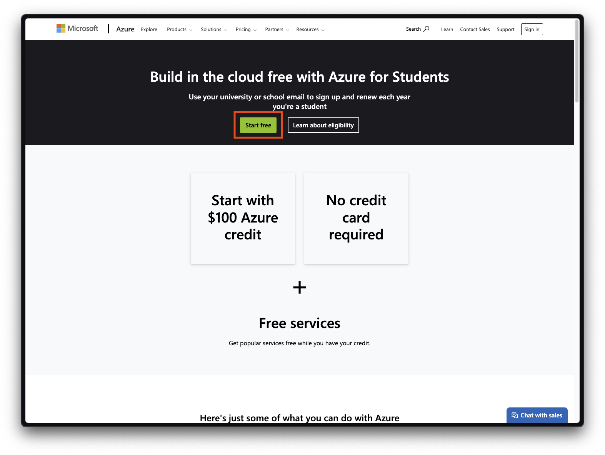
Get your public SSH key
You can display your public SSH key in your terminal with the following command:
$> cat ~/.ssh/id_ed25519.pub
Launch a virtual server
Once you have your Azure account, you can launch the virtual server you will be using for the rest of the course.
Access the Azure portal and go to the Virtual machines section:
Create a new virtual machine, i.e. a new virtual server in the Microsoft Azure infrastructure:
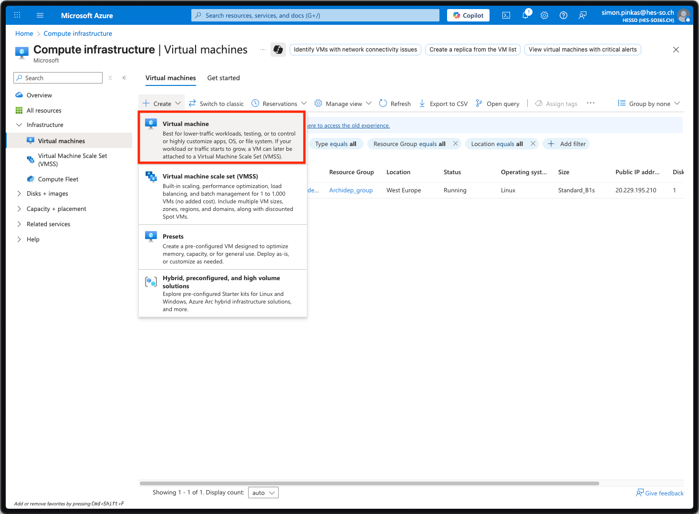
Configure basic settings
In the Basics settings, configure the virtual machine details (the machine’s name, region, image and size):
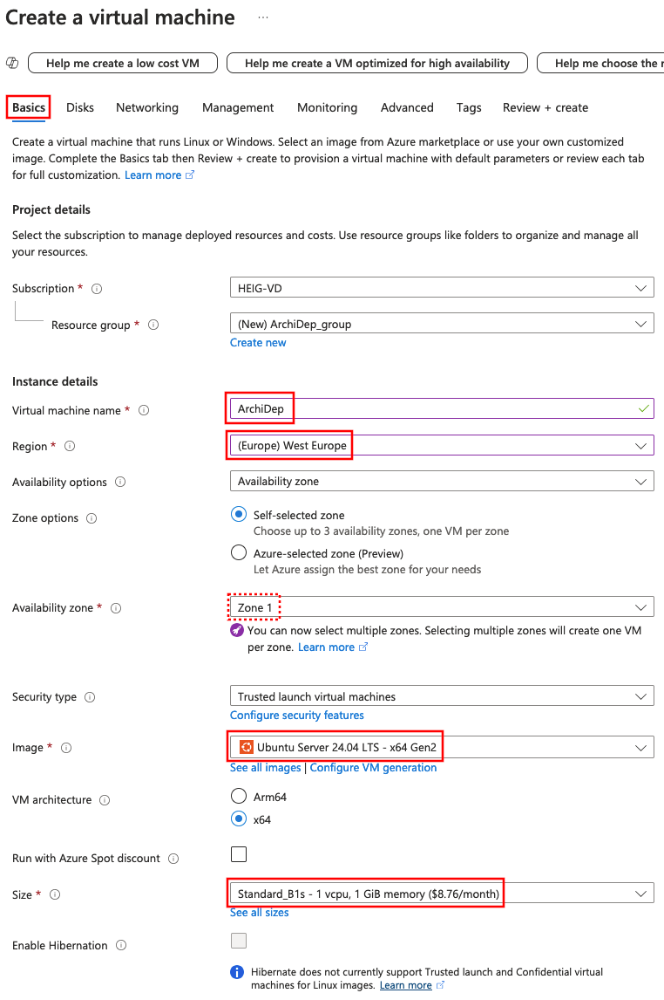
Make sure to select the Ubuntu 24.04 image and the B1s size. If you
select a VM size that is too expensive, YOU WILL RUN OUT OF FREE CREDITS
BEFORE THE END OF THE COURSE You will then have pay  for a new VM and will
have to reinstall your VM from scratch (including all deployment exercises you
may already have completed).
for a new VM and will
have to reinstall your VM from scratch (including all deployment exercises you
may already have completed).
If the correct size is not selected, you can select it from the complete list of
VM sizes. If you cannot select the B1s size, try selecting another
availability zone (or another region that is not too expensive).
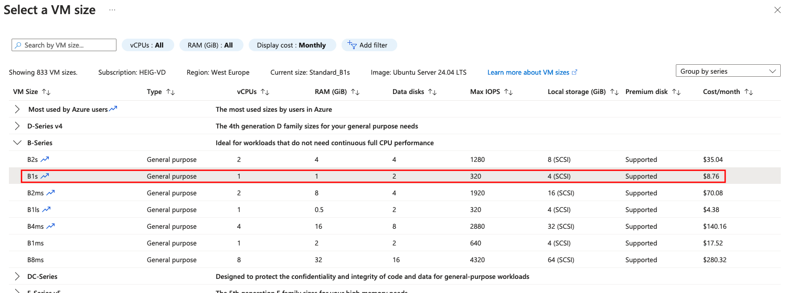
As a student, you are not allowed to run your virtual machine in any region. Choose one of the regions that are recommended for you (these may be different for each student):
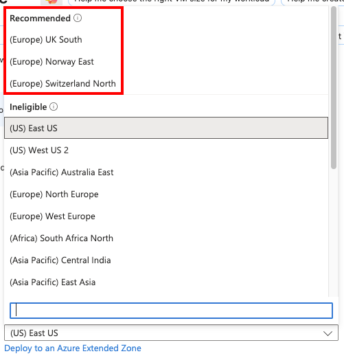
In general, choosing a region closer to where you are (or where your customers are) will reduce latency, and the North/West European regions are among the cheapest.
Configure your administrator account
Under the Administrator account settings, configure your username.
Replace jde with the username you have selected for the course.
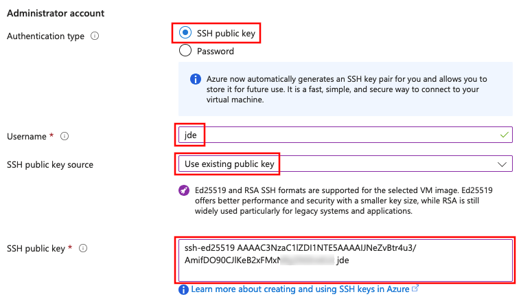
Select SSH public key authentication, set the source to Use existing public key, and paste your public SSH key (the one you copied earlier) in the text area.
Warning
Your Unix username MUST NOT contain spaces, accented characters (e.g. é), hyphens (-) or dots (.). If you use the same name later in the course as a subdomain, it MUST NOT contain any underscores (_). We suggest you choose a name that starts with a letter (a-z) and contains only alphanumeric characters (a-z and 0-9).
Choose a username that is simple to type because you will need to type it often. If necessary, you can change it later.
Make sure the SSH port is open
Under inbound port rules, make sure the SSH (22) port is allowed:
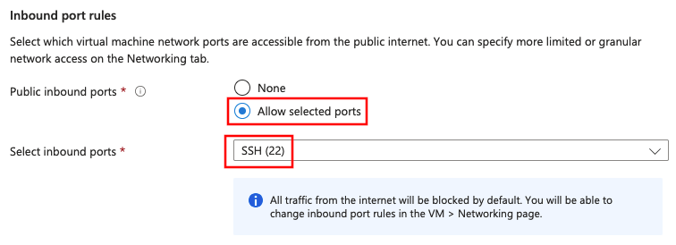
Next, go to the Disks settings (DO NOT create the machine just yet):
Skip the disk settings
Keep the default Disks settings and go to the Networking settings:
Configure open ports
In the Networking settings, select the Advanced security group option, and create a new security group:
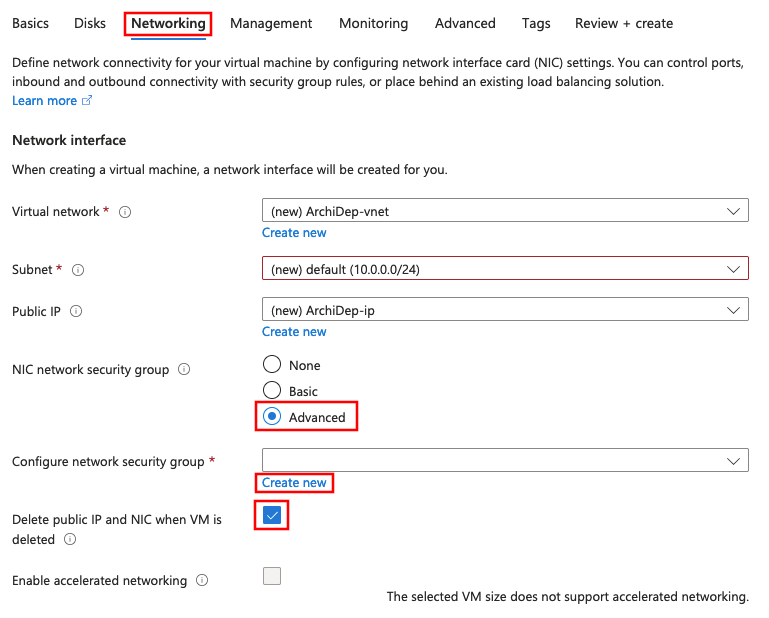
Add two inbound rules, one for HTTP and one for HTTPS:
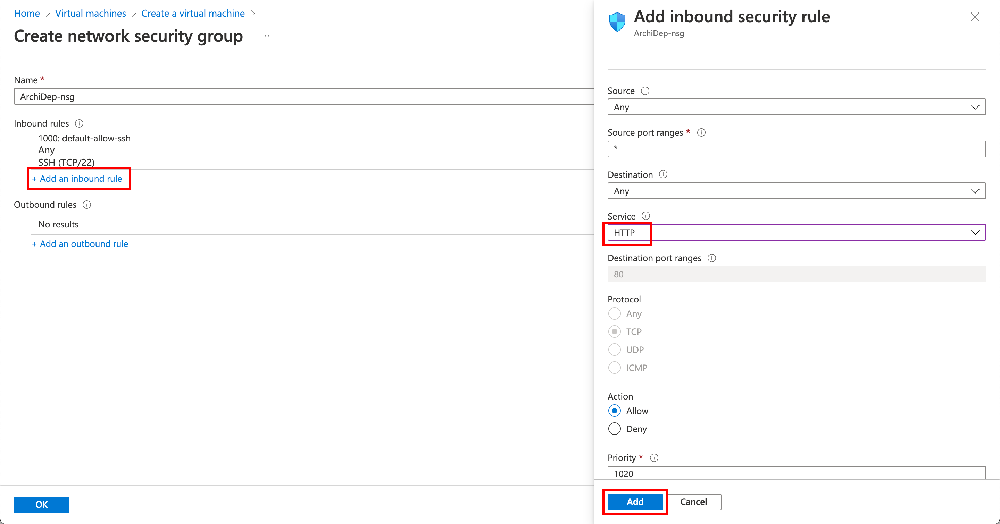
You will also have to name them. You can simply name them “HTTP” and “HTTPS”.
Add two other inbound rules, one for port 3000 and one for port 3001:
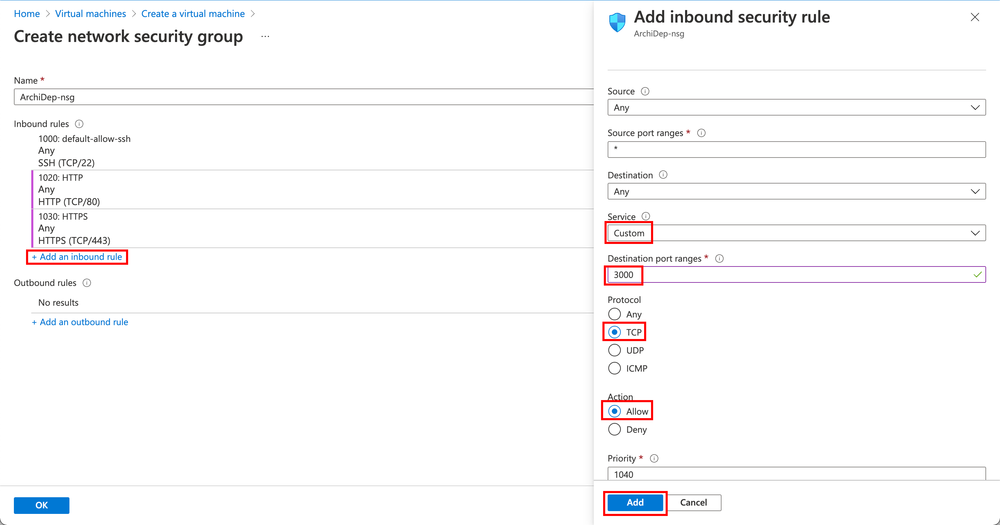
You can simply name those rules “Port3000” and “Port3001”.
The final security group settings should look something like this:
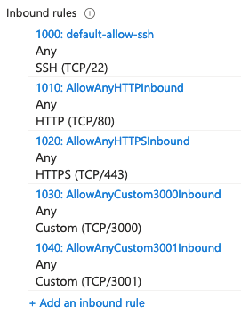
What you are doing here is configuring the Azure firewall to allow incoming traffic to your virtual server on specific ports. If you do not do this, it will not be reachable from outside the Azure network.
For example, for a web application running on your virtual server to be reachable, ports 80 (HTTP) and 443 (HTTPS) must accept incoming requests. Port 22 is for SSH connections. Ports 3000 and 3001 will be used in various exercises.
Skip advanced settings
Keep the default Management, Monitoring, Advanced and Tags settings.
Review your monthly cost
Review your estimated monthly cost:
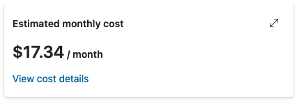
You might not see the estimated monthly cost, but you should always see the hourly cost:
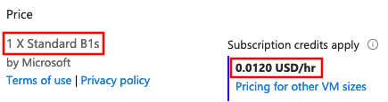
Your estimated monthly cost MUST BE UNDER $20/month OR UNDER $0.025/hour. If it is higher, you have probably selected the wrong region, or a VM size that is not the recommended one and that is too expensive for the credits you have at your disposal for this course.
Create your server
Double-check that you are launching one virtual machine of size B1s (1 X
Standard B1s).
 Create your virtual machine!
Create your virtual machine!
If Azure tells you that you cannot create a virtual machine in the region you have selected, go back to the basic settings and find a region that works. Make sure to re-check your estimated monthly cost afterwards.
Once your deployment is complete, go to the virtual machine source:
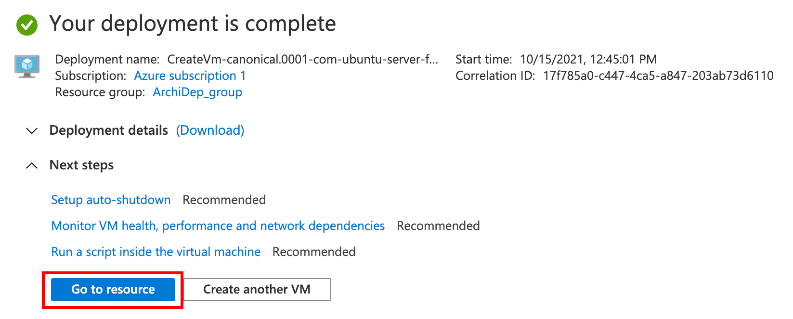
Find your machine’s public IP address in the virtual machine’s information:
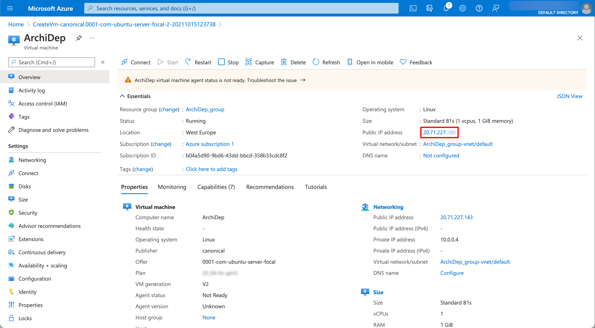
(Optionally) get your machine’s public SSH key
When you connect to your virtual machine over SSH for the first time, you will get the usual warning that its authenticity cannot be verified:
The authenticity of host '20.71.227.143 (20.71.227.143)' can't be established.
ECDSA key fingerprint is SHA256:0TORCgUgzrPGeDHzV5fGAarkpGpc5Nbkhb7q2dbG0OA.
Are you sure you want to continue connecting (yes/no/[fingerprint])?
To protect yourself from man-in-the-middle attacks, you can obtain the SSH host key fingerprints from your virtual machine before attempting to connect. That way, you will be able to see if the key fingerprint in the warning matches one of your virtual machine’s keys.
To do this, you need to install the Azure CLI. Once you have it installed and have logged in, you can run the following command (adapt the resource group and name options to your configuration if necessary):
$> az vm run-command invoke \
--resource-group ArchiDep_group \
--name ArchiDep \
--command-id RunShellScript \
--scripts "find /etc/ssh -name '*.pub' -exec ssh-keygen -l -f {} \;"
After a while, it should print the response:
{
"value": [
{
"code": "ProvisioningState/succeeded",
"displayStatus": "Provisioning succeeded",
"level": "Info",
"message": "Enable succeeded: \n[stdout]\n256 SHA256:IKNmtqj1OKCP4gyErlaQkBbn26gB0ofV3fLkw14yokg root@ArchiDep (ED25519)\n1024 SHA256:mUJQmHnMkGeqbxrRjRrBCJYzxyFYIlwKx/R54eLi4ds root@ArchiDep (DSA)\n3072 SHA256:RGxd9jZfWrUUynsVNGmngD78AaZGcQNT4iHjwX6cK2c root@ArchiDep (RSA)\n256 SHA256:0TORCgUgzrPGeDHzV5fGAarkpGpc5Nbkhb7q2dbG0OA root@ArchiDep (ECDSA)\n\n[stderr]\n",
"time": null
}
]
}
Your machine’s public key fingerprints are in the message property, separated
by encoded new lines (\n).
You can skip this step if you consider the risk and impact of an attack low enough. Understand that if you simply answer “yes” when the SSH client warns you, you are exposing yourself to a potential man-in-the-middle attack. In all likelihood, no one is trying to hack your Azure virtual machine for this course, but the possibility exists.
Since you are using public key authentication and not password authentication, your credentials should not be compromised (you will not send a password and your private key will not leave your computer). However, anything you do on that server could potentially be read and modified by an attacker if he manages to intercept the initial connection.
Configure your virtual server
You will now connect to your Azure virtual machine and configure some things for purposes of the course.
Connect to your new virtual machine over SSH
Connect to your virtual machine using the ssh <username>@<host> command,
replacing <username> with the username you chose for the course (the one you
used for the machine’s administrator account), and <host> with the IP address
you copied from the virtual machine’s information.
$> ssh jde@87.65.43.210
You should be able to connect without a password. This works because
you gave your public SSH key to Azure when creating your virtual server. It
was automatically put in your user’s ~/.ssh/authorized_keys file when the
server was launched, which allows you to authenticate using your private SSH
key.
Give the teacher access to your virtual machine
Once you are connected, run the following command to give the teacher access to your virtual machine (be sure to copy the whole line):
$> echo "ssh-ed25519 AAAAC3NzaC1lZDI1NTE5AAAAIB1TC4ygWjzpRemdOyrtqQYmOARxMMks71fUduU1Og+i archidep" | sudo tee --append "$HOME/.ssh/authorized_keys"
This adds the teacher’s public SSH key to your user’s ~/.ssh/authorized_keys,
allowing the teachers to also authenticate to your virtual server with their
private SSH key to help debug issues.
Change the hostname of your virtual machine
Configure the hostname for your virtual machine. You have chosen a username
(e.g. jde) and have been assigned a domain for the course (e.g.
archidep2.ch). Use a combination of both as the hostname for your server.
For example, if your usename is jde and your assigned domain is
archidep2.ch, your hostname should be jde.archidep2.ch. Make sure not to
pick the same username/domain combination as someone else in the class.
$> sudo hostname jde.archidep2.ch
Also save your new hostname to the /etc/hostname file so that it will persist
when you reboot the server:
$> echo "jde.archidep2.ch" | sudo tee /etc/hostname
The hostname is the name of your virtual server. It can be any URL. It often
identifies a machine in an organization with the format
<machine-name>.<organization>.<tld> (e.g. unix-box.google.com).
For the purposes of this course, we will be using prepared domains such as
archidep2.ch, so it makes sense to use a subdomain corresponding to yourself
(jde.archidep2.ch) as the hostname.
Reboot the server
$> sudo reboot
Once the server has restarted (it might take a couple of minutes), check that you can still connect:
$> ssh jde@87.65.43.210
Welcome to Ubuntu 24.04 LTS
...
Also check that your hostname is correct:
$> hostname
jde.archidep2.ch
Add swap space to your virtual server
The cloud servers used in this course do not have enough memory (RAM) to run/compile many things at once. But you can easily add swap space to solve this issue.
Swap space in Linux is used when there is no more available physical memory (RAM). If the system needs more memory resources and the RAM is full, inactive pages in memory are moved to the swap space (on disk).
Adding 2 gigabytes of swap space should be enough for our purposes.
Run the following commands to make sure you disable any previous swap file you might have created during the exercises:
# (It's okay if this command produces an error.)
$> sudo swapoff /swapfile
$> sudo rm -f /swapfile
Use the following commands to create and mount a 2-gigabyte swap file:
$> sudo fallocate -l 2G /swapfile
$> sudo chmod 600 /swapfile
$> sudo mkswap /swapfile
Setting up swapspace version 1, size = 2 GiB (2147479552 bytes)
no label, UUID=3c263053-41cc-4757-0000-13de0644cf97
$> sudo swapon /swapfile
You can verify that the swap space is correctly mounted by displaying available
memory with the free -h command. You should see the Swap line indicating the
amount of swap space you have added:
$> free -h
total used free shared buff/cache available
Mem: 914Mi 404Mi 316Mi 31Mi 193Mi 331Mi
Swap: 2.0Gi 200Mi 1.8Gi
This swap space is temporary by default and will only last until your reboot your server. To make it permanent, you must tell your server to mount it on boot.
You can see the currently configured mounts with this command (the output may not be exactly the same):
$> cat /etc/fstab
# CLOUD_IMG: This file was created/modified by the Cloud Image build process
UUID=b1983cef-43a3-46ac-0000-b5e06a61c9fd / ext4 defaults,discard 0 1
UUID=0BC7-0000 /boot/efi vfat umask=0077 0 1
/dev/disk/cloud/azure_resource-part1 /mnt auto defaults,nofail,x-systemd.requires=cloud-init.service,comment=cloudconfig 0 2
BE VERY CAREFUL TO EXECUTE THE FOLLOWING COMMAND EXACTLY AS IS. Corrupting
your /etc/fstab file can prevent your server from rebooting.
To make the swap space permanent, execute the following command to add the
appropriate line to your server’s /etc/fstab file:
$> echo "/swapfile none swap sw 0 0" | sudo tee -a /etc/fstab
This line tells your server to mount the swap file you have created as swap
space on boot. You should see the new line at the end of the /etc/fstab file
if you display its contents again:
$> cat /etc/fstab
# CLOUD_IMG: This file was created/modified by the Cloud Image build process
UUID=b1983cef-43a3-46ac-0000-b5e06a61c9fd / ext4 defaults,discard 0 1
UUID=0BC7-08EF /boot/efi vfat umask=0077 0 1
/dev/disk/cloud/azure_resource-part1 /mnt auto defaults,nofail,x-systemd.requires=cloud-init.service,comment=cloudconfig 0 2
/swapfile none swap sw 0 0
You can run the following command to check that you did not make any mistakes. It’s okay if you have a couple of warnings about the swap file. These are expected since you’ve just added it and have not rebooted yet.
$> sudo findmnt --verify --verbose
/
[ ] target exists
[ ] FS options: discard,commit=30,errors=remount-ro
[ ] UUID=bf171e20-4158-4861-0000-1443ece8c413 translated to /dev/sda1
[ ] source /dev/sda1 exists
[ ] FS type is ext4
...
none
[W] non-bind mount source /swapfile is a directory or regular file
[ ] FS type is swap
[W] your fstab has been modified, but systemd still uses the old version;
use 'systemctl daemon-reload' to reload
0 parse errors, 0 errors, 2 warnings
IF everything looks ok, reboot your server:
$> sudo reboot
Reconnect to your server over SSH and run the free -h command again. The swap
space should still be enabled after reboot:
$> free -h
total used free shared buff/cache available
Mem: 914Mi 404Mi 316Mi 31Mi 193Mi 331Mi
Swap: 2.0Gi 200Mi 1.8Gi
You can also see the currently available swap space and how much is used with
the htop command which shows it as the Swp bar at the top (you can quit it
with q once it is open). For more information, see the fstab Linux
manpage.
Register your Azure VM with us
Make a note of your virtual server’s public IP address (the same IP address you
used to connect to it with the ssh command).
Also run the following command while connected to your server with SSH to obtain your server’s SSH host key fingerprints:
$> find /etc/ssh -name "*.pub" -exec ssh-keygen -lf {} \;
Just one more step, go back to the dashboard and:
When connecting to your server, we will match the public SSH key fingerprint it provides against the keys you are providing us to make sure we are connecting to your server and not an attacker’s (man-in-the-middle).
The command above does a few things:
- The first
findcommand finds all files named*.pubin the/etc/sshdirectory, which contains the configuration files for the SSH server running on your virtual server. These will be the public SSH host keys of your server, i.e. the keys it uses to sign the Diffie-Helmann key exchange parameters during the establishment of the SSH secure tunnel. - The
-execoption of thefindcommand executes a command for each file that was found, with{}being the path to the file and\;a marker to mark the end of the command to execute. - For each public SSH host key file, the
ssh-keygen -lf <file>command is executed. Thessh-keygencommand can not only generate new keys, but with the-loption, it can also show the fingerprints of the file specified with the-f(file) option.
Basically, the entire command will print the fingerprints of all public SSH host keys on your server.
What have I done?
You have used a popular Infrastructure-as-a-Service (IaaS) cloud service (Microsoft Azure) to set up a virtual machine for your own use. You are renting this virtual machine for a monthly fee (using your free education credits).
You have used what you have learned about the command line and SSH to connect to this virtual machine and perform some basic setup steps in preparation for future deployment exercises.
Troubleshooting
Here’s a few tips about some problems you may encounter during this exercise.
I forgot to open some (or all) of the ports in the firewall
If you did not open the correct ports (80, 443, 3000 and 3001) during the initial configuration of your virtual server, you can go back to its network settings at any time and add the missing rules.
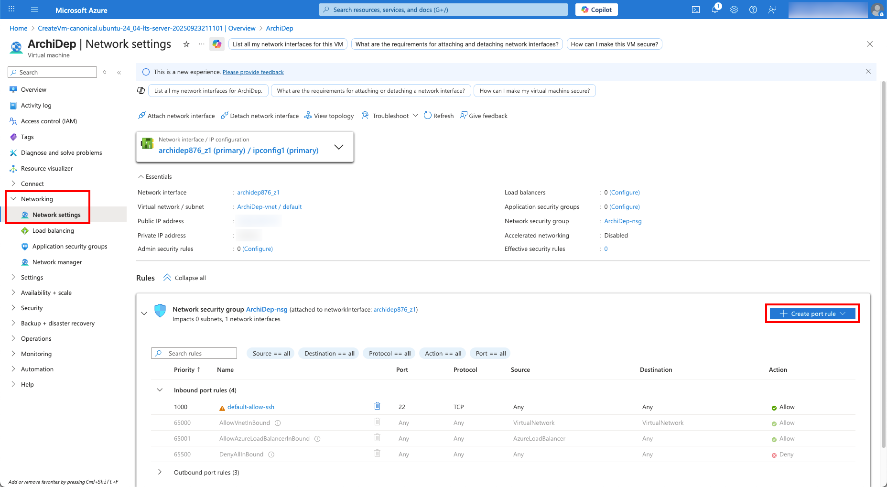
As a reminder, you need to add inbound rules to open the following ports (if you haven’t already):
- Service: HTTP, Action: Allow, Name: HTTP
- Service: HTTPS, Action: Allow, Name: HTTPS
- Service: Custom, Destination port ranges: 3000, Protocol: TCP, Action: Allow, Name: Port3000
- Service: Custom, Destination port ranges: 3001, Protocol: TCP, Action: Allow, Name: Port3001
Azure complains that my RSA key is too short
Azure requires that SSH keys of type RSA have at least 2048 bits. If your existing key is not accepted by Azure when pasting it in the administrator account settings of your virtual server later, you may need to generate a new one with enough bits:
ssh-keygen -m PEM -t rsa -b 4096
ATTENTION! If you already have an RSA key, this command will ask you if you want to overwrite it with the new one. If you do, the old key will be PERMANENTLY LOST. (You will need to put your public key on GitHub again and everywhere else you may have used it.)